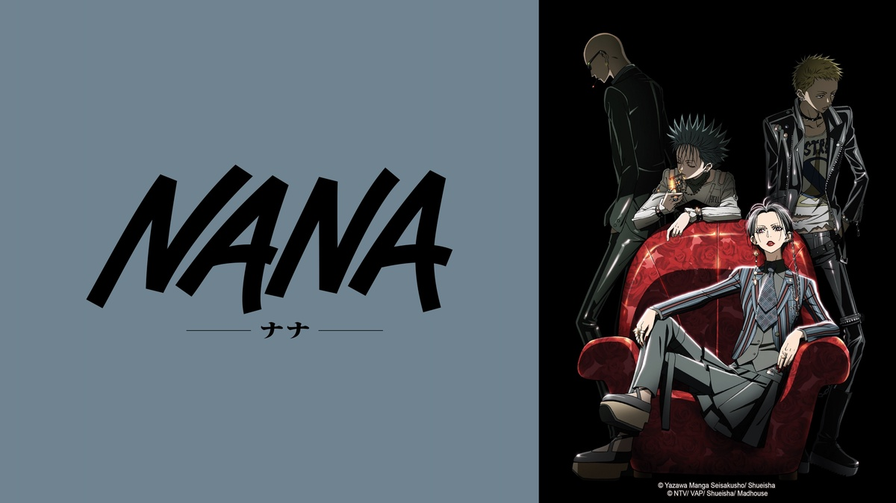

Josei
El término "josei" se refiere a los animes y mangas destinados a un público adulto femenino. Estos animes a menudo presentan temas de romance, drama, vida cotidiana y cuestiones emocionales y psicológicas, y están dirigidos a mujeres que buscan historias más maduras y realistas. Ejemplos populares de josei son "Nana", "Chihayafuru", "Honey and Clover" y "Paradise Kiss".
Nana
"Nana" es un anime y manga que sigue la vida de dos jóvenes mujeres llamadas Nana Komatsu y Nana Osaki. Las dos Nanas tienen personalidades y objetivos diferentes, pero se convierten en amigas y comparten sus sueños y preocupaciones mientras luchan por sobrevivir y triunfar en la ciudad de Tokio.
Nana Komatsu, también conocida como "Hachi", es una joven inocente y soñadora que se muda a Tokio para seguir a su novio y comenzar una nueva vida. En su camino, conoce a la rebelde y talentosa Nana Osaki, una cantante punk rock que aspira a convertirse en una estrella de la música. Las dos Nanas se convierten en amigas y compañeras de habitación, y juntas experimentan los altibajos de la vida, el amor y la música en Tokio.
El anime y manga "Nana" es conocido por su realismo, su retrato detallado de la vida en la ciudad de Tokio y sus personajes complejos y bien desarrollados. La serie aborda temas adultos como las relaciones, la amistad, la música, el amor y el deseo de éxito y fama en la industria del entretenimiento.